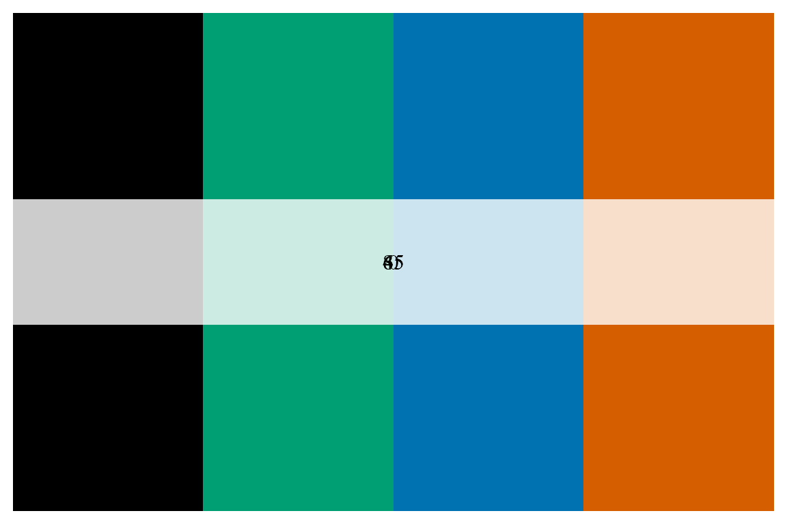

fd_examples.Rmdfortedata
In order to help end-users work with fortedata we have included some worked examples.
As detailed in the fd_experimental_design_vignette, FoRTE’s stem-girdling disturbance has four severity levels–0, 45, 65, and 85% targeted leaf area reductions–applied in two ways, a bottom-up and top-down treatment. The plot metadata and assignments are contained in plot_metadata.
For data analysis it is often necessary to match disturbance metadata with other FoRTE data. For our example, we are going to look at how hemispherical camera derived leaf area varies from pre- (2018) to post-disturbance (2019), by disturbance severity level and treatment.
First, we want to bring the metadata into the workspace
# bring in metadata via the plot_metadata() function
df <- fortedata::fd_plot_metadata()
# now we converte the tibble to a data frame
df <- data.frame(df)If we look at the structure of the disturbance metadata with str we can see that the metadata includes plot information for all plot hierarchies within the FoRTE design, including replicate, plot, subplot, and nested subplot.
# let's look at the structure of the data
str(df)
## 'data.frame': 336 obs. of 10 variables:
## $ replicate : chr "A" "A" "A" "A" ...
## $ plot : int 1 1 2 2 3 3 4 4 1 1 ...
## $ subplot : chr "E" "W" "E" "W" ...
## $ latitude : num 45.6 45.6 45.6 45.6 45.6 ...
## $ longitude : num -84.7 -84.7 -84.7 -84.7 -84.7 ...
## $ disturbance_severity: int 85 85 45 45 65 65 0 0 0 0 ...
## $ treatment : chr "B" "T" "T" "B" ...
## $ plot_type : chr "subplot" "subplot" "subplot" "subplot" ...
## $ nsp_id : int NA NA NA NA NA NA NA NA NA NA ...
## $ area : int 1000 1000 1000 1000 1000 1000 1000 1000 1000 1000 ...For our example analysis we want to isolate the subplot_id level metadata to match with our camera data.
# First we want to concatenate our replicate, plot and subplot data to make a subplot_id column
df$subplot_id <- paste(df$replicate, 0, df$plot, df$subplot, sep = "")
df$subplot_id <- as.factor(df$subplot_id)
# Now that we have our data in the form for this analysis, let's filter our metadata to the subplot level.
df %>%
select(subplot_id, disturbance_severity, treatment) %>%
distinct() %>%
data.frame() -> dis.meta.data
# this filters the metadata down to the subplot_id level
dis.meta.data <- dis.meta.data[c(1:32), ]
print(dis.meta.data)
## subplot_id disturbance_severity treatment
## 1 A01E 85 B
## 2 A01W 85 T
## 3 A02E 45 T
## 4 A02W 45 B
## 5 A03E 65 B
## 6 A03W 65 T
## 7 A04E 0 B
## 8 A04W 0 T
## 9 B01E 0 B
## 10 B01W 0 T
## 11 B02E 45 T
## 12 B02W 45 B
## 13 B03E 85 B
## 14 B03W 85 T
## 15 B04E 65 T
## 16 B04W 65 B
## 17 C01E 0 T
## 18 C01W 0 B
## 19 C02E 65 B
## 20 C02W 65 T
## 21 C03E 85 B
## 22 C03W 85 T
## 23 C04E 45 T
## 24 C04W 45 B
## 25 D01E 0 B
## 26 D01W 0 T
## 27 D02E 85 B
## 28 D02W 85 T
## 29 D03E 45 B
## 30 D03W 45 T
## 31 D04E 65 T
## 32 D04W 65 BNow that we have our metadata in the right format, we want to bring in our camera data using the fd_hemi_camera() function and then merge with our metadata.
# First we import the camera data
cam <- fd_hemi_camera()
# Then we merge with the metadata from above
cam <- merge(cam, dis.meta.data)
# For this analysis we want to code both disturbance severity and treatment as factors
cam$disturbance_severity <- as.factor(cam$disturbance_severity)
cam$treatment <- as.factor(cam$treatment)Now we to analyze the data for differences. First, let’s plot our data to see what we are dealing with. We want to look differences from pre- to post-disturbance by both disturbance severity and treatment. First, we will make a new column by extracting the year from the date column then we will do a facetted density plot to look at distributions.
# making year column
cam$year <- format(as.Date(cam$date), "%Y")
# let's look at distribution by year, by disturbance severity and treatment
ggplot(cam, aes(x = lai_cam, fill = disturbance_severity ))+
geom_density()+
xlab("Leaf Area Index")+
ylab("")+
facet_grid(year ~ treatment)This is a pretty good first assumption, but let’s clean it up. FoRTE uses a standardized color scheme that can be accessed via forte_colors(). The palette is such that the control is black (“#000000”), 45% is green (“#009E73”), 65% is blue (“#0072B2”), and 85% is orange (“#D55E00”). The specfic hex codes are used as they are eye-friendly color palettes.
forte_pal <- forte_colors()
# let's make a function to print the palette
print.palette <- function(x, ...) {
n <- length(x)
old <- par(mar = c(0.5, 0.5, 0.5, 0.5))
on.exit(par(old))
image(1:n, 1, as.matrix(1:n), col = x,
ylab = "", xaxt = "n", yaxt = "n", bty = "n")
rect(0, 0.9, n + 1, 1.1, col = rgb(1, 1, 1, 0.8), border = NA)
text((n + 1) / 2, 1, labels = attr(x, "name"), cex = 1, family = "serif")
}
print.palette(forte_pal) We can then use the colors from forte_colors and create a cleaner plot with a few extra lines of code.
# first let's make some new, more informative labels for our facets
facet.labs <- c("B" = "Bottom-Up", "T" = "Top-Down")
# let's look at distribution by year, by disturbance severity and treatment
ggplot(cam, aes(x = lai_cam, fill = disturbance_severity ))+
geom_density(alpha = 0.4)+
theme_minimal()+
scale_fill_manual(values = forte_pal,
name = "Disturbance Severity",
labels = c("0%", "45%", "65%", "85%"))+
theme(legend.position = "bottom")+
xlab("Leaf Area Index")+
ylab("Density")+
facet_grid(year ~ treatment, labeller = labeller(treatment = facet.labs))